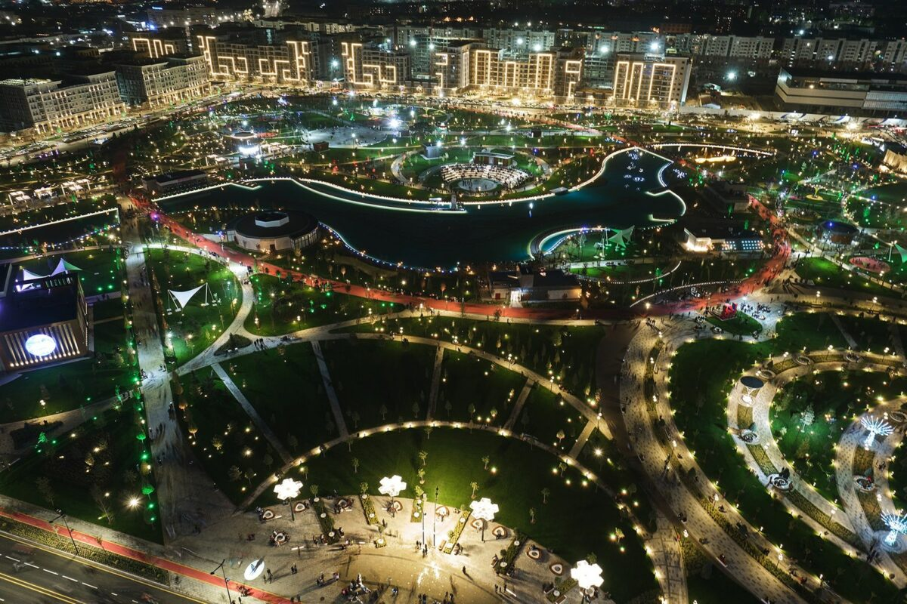
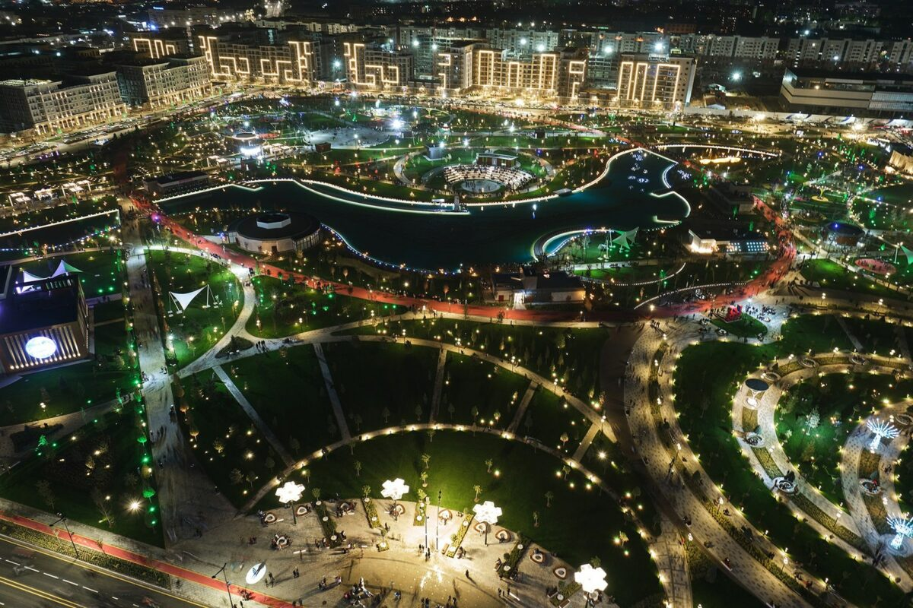

Past and present merge in Uzbekistan. Deserts and secular cities, ancient fortresses and sown fields are the backdrop of a country with a growing economy. Clay walls, shiny majolica and modern buildings. Camels and high-speed trains. A country with a thousand-year history, a crossroads of people who crossed Asia from East and West, invaders and traders. The Silk Road touched Samarkand, Bukhara and Khiva. These are ancient trade routes that are being reborn thanks to new roads and railways between the two continents
Choose
which
region
you
want
to
go
?
Welcome
to
Uzbekistan
Tours
for
Uzbekistan
For
Your
Best
Holiday
!
1 день: Ташкент
Прибытие в Ташкент. Встреча в аэропорту г. Ташкент.
Трансфер в гостиницу. Размещение в Гостинице. Отдых.
Экскурсия по Ташкенту.
Посещение старого города, которая включает:
Ансамбль Хазрати Имам.
Базар «Чорсу».
Комплексный обед.
После обеда, обзорная экскурсия по современному городу.
Государственный музей
прикладного искусства Узбекистана.
Государственный музей истории
Узбекистана.
Посещения Государственного
Академического Большого театра Узбекистан имени Алишера Навои
Комплексный ужин.
2 день:
Ташкент - Самарканд
Завтрак.
Трансфер до ж/д вокзала.
Переезд из Ташкента в Самарканд.
Приезд в Самарканд.
Обзорная экскурсия по городу.
Площадь Регистан.
Соборная мечеть «Биби Ханым».
Комплексный обед.
Продолжение экскурсии по городу
Ансамбль Шахи Зинда
Мечеть Хазрет – Хызра
Мавзолей Амира Тимура.
Трансфер до гостиницы. Размещение.
Комплексный ужин.
Трансфер в гостиницу.

3 день: Самарканд
Обзорная экскурсия по городу.
Обсерватория Улугбека
Мавзолей пророка Дониёра
Комплексный обед.
Дегустация вина на винном заводе Ховренко.
Свободное время.
Ужин.
Трансфер до ж/д вокзала.
Переезд в Бухару поездом.
Прибытие в Бухару.
Трансфер в гостиницу. Размещение.
4 день: Бухара
Завтрак.
Обзорная экскурсия по городу.
Мавзолей «Бахауддина Накшбанда».
Комплексный обед.
Пешая прогулка по городу.
Комплекс «Пои-Калян» через крытый восточный базар 3 куполами
Медресе Улугбека и Абдуллазиз-хана
Мечеть Магоки-Аттари
Комплекс Ляби-хауз
Медресе Надира Деван-беги
5 день: Бухара
Обзорная экскурсия по городу.
Дворец «Ситораи Мохи Хоса».
Некрополь «Чор-Бакр».
Комплексный обед.
Продолжение экскурсии по городу.
Мавзолей Саманидов.
Мавзолей Чашма-Аюб.
Медресе «Чор-Минор».
Свободное время в Бухаре.
Ужин.
6 день: Бухара
Продолжение экскурсии загородом Бухары.
Крепость Арк.
Мечеть Боло-хауз.
Комплексный обед.
Трансфер до ж/д вокзала.
Переезд до Ташкента.
Прибытие в Ташкент.
Ужин.
Трансфер в гостиницу.
7 день: Ташкент
Завтрак.
Свободное время.
Трансфер в международный аэропорт г. Ташкент.
Конец тура.
 
